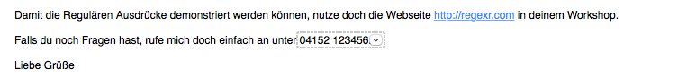
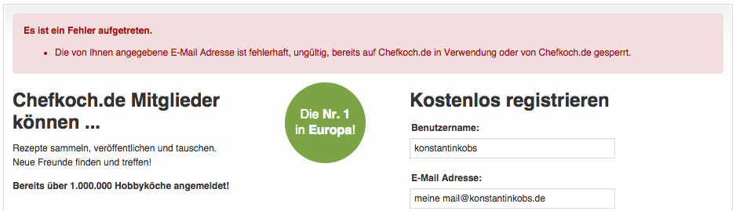
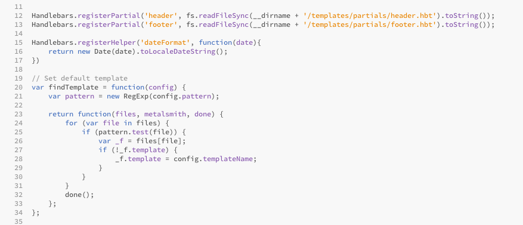
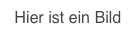

/^Reg(exp?|ular expression)$/A way to describe a set of strings.
- Lea Verou



Sie beschreiben eine Syntax und können überprüfen, ob diese Syntax in einem Text vorkommt oder erfüllt ist.
/^Reg(exp?|ular expression)$/
Erkennt:
|( ){min,max}[ ] wählen ein Zeichen daraus aus[a-z]Schreiben Sie einen Regulären Ausdruck, der Telefonnummern in einem Text findet.
. matcht jedes Zeichen (bis auf neue Zeilen)+ = {1,}, * = {0,} und ? = {0,1}[^a] bedeutet: Jedes Zeichen außer a^ und $ bezeichnen den Anfang und das Ende der Zeichenkette\d = [0-9]; \D = [^\d]\w = [a-zA-Z0-9]; \W = [^\w]\s sind Leerräume und neue Zeilen; \S Gegenteil\b stellt man Wortanfänge und -enden darVereinfachen und verbessern Sie den Regulären Ausdruck mit den eben gelernten Abkürzungen.
g (global): Sucht alle Vorkommnissei (ignore case): Nicht mehr auf Groß- und Kleinschreibung achtenm (multiline): ^ und $ beziehen sich nicht auf den Anfang und das Ende des Strings, sondern jeder Zeile.Schreiben Sie einen Regulären Ausdruck, der eine Zahl auf die Teilbarkeit mit 20 prüft.
Auf Teile der gefundenen Zeichenkette zurückgreifen
\1 innerhalb eines Ausdruckes
$1 beim Ersetzen
Schreiben Sie einen Regulären Ausdruck, der in einem Text Internet-Adressen findet und durch einen Link auf diese Seite ersetzt.
Schreiben Sie einen Regulären Ausdruck, der alle Datumsangaben im Abschnitt "Mauerfall" des deutschen Wikipedia-Artikels "Berliner Mauer" findet.
Schreiben Sie einen Regulären Ausdruck, der überprüft, ob eine Mail-Adresse eine gültige Syntax hat.
Schreiben Sie einen Regulären Ausdruck, der eine IPv4 Adresse auf seine Syntax überprüft.
Beispiel: 192.168.0.1
+ und * sind greedy+? und *? sind lazyWie findet der Computer überhaupt alle Vorkommnisse des Ausdruckes?
Beispiel: /a+aab/
# Überschrift
## Zweite Überschrift
*Kursiv* > Kursiv
**Fett** > Fett
[Link](http://google.de) > Link
 > 